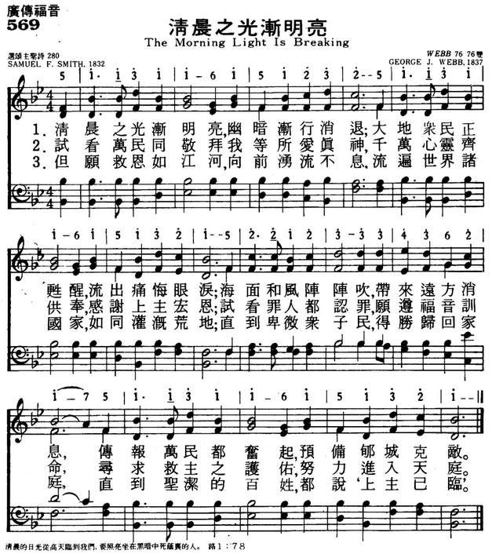
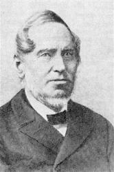

|
|
|
|
1 The morning light is breaking, 2 See heathen nations bending 3 Blest river of salvation! Amen. |
569清晨之光渐明亮
1.清晨之光渐明亮，幽暗渐行消退；
大地众民正苏醒，流出痛悔眼泪； 海面和风阵阵吹，带来远方消息， 传报万民都奋起，预备郇城克敌。 2.试看万民同敬拜我等所爱真神， 千万心灵齐供奉，感谢上主宏恩； 试看罪人都认罪，愿遵福音训命， 寻求救主之护佑，努力进入天庭。 3.但愿救恩如江河，向前涌流不息， 流遍世界诸国家，如同灌溉荒地； 直到卑微众子民，得胜归回家庭， 直到圣洁的百姓，都说上主已临。 |
|
https://www.mred365.cn/szxg/7572.html
 https://hymnary.org/hymn/WASH1957/page/363
|
|
|
|
|

-

The Morning Light is Breaking (Webb) https://www.youtube.com/watch?v=ddTStPIMHhQ -
https://youtu.be/cXVGXoFpvQ4
| Text: | The Morning Light Is Breaking |
| Author: | Samuel F. Smith, 1808-1895 |
| Tune: | WEBB |
| Composer: | George J. Webb, 1803-1887 |
| Short Name: | Samuel Francis Smith |
| Full Name: | Smith, Samuel Francis, 1808-1895 |
| Birth Year: | 1808 |
| Death Year: | 1895 |
Smith, Samuel Francis, D.D.,


was born in Boston, U.S.A., Oct. 21, 1808, and graduated in arts at Harvard, and in theology at Andover. He entered the Baptist ministry in 1832, and became the same year editor of the Baptist Missionary Magazine. He also contributed to the Encyclopaedia Americana. From 1834 to 1842 he was pastor at Waterville, Maine, and Professor of Modern Languages in Waterville College. In 1842 he removed to Newton, Massachusetts, where he remained until 1854, when he became the editor of the publications of the Baptist Missionary Union. With Baron Stow he prepared the Baptist collection known as The Psalmist, published in 1843, to which he contributed several hymns. The Psalmist is the most creditable and influential of the American Baptist collections to the present day. Dr. Smith also published Lyric Gems, 1854, Rock of Ages, 1870, &c. A large number of his hymns are in use in America, and several have passed into some of the English collections. Taking his hymns in common use in alphabetical order, we have the following:—
Tune Information
| Title: | WEBB |
| Composer: | George James Webb (1837) |
| Meter: | 7.6.7.6 D |
| Incipit: | 51131 16151 2325 |
| Key: | B♭ Major |
| Copyright: | Public Domain |
| Short Name: | George James Webb |
| Full Name: | Webb, George James, 1803-1887 |
| Birth Year: | 1803 |
| Death Year: | 1887 |
George James Webb, b. 1803,England; d. 1887, Orange, N. J.
Evangelical Lutheran Hymnal, 1908
“THE MORNING LIGHT IS BREAKING”
“The
darkness is past, and the true light now shineth” (1 John 2:8)
INTRO.:
A hymn which points out that the darkness past and the true light is now shining is “The Morning Light Is Breaking.” The text was written by Samuel Francis Smith, who was born on Oct. 21, 1808, in Boston, MA. He attended the Boston Latin School from 1820 to 1825 and graduated from Harvard, where he and Oliver Wendell Holmes were classmates, in 1829. He then attended the Andover Theological Seminary in 1832. While at Andover, he was asked by Lowell Mason to provide English lyrics for a “German patriotic tune” which Mason had brought back from Europe and which, unbeknownst to them, was actually the national anthem of England, “God Save the King/Queen.” Smith produced a poem which he called “America” and began, “My country, ‘tis of thee.” It was first performed in public on July 4, 1831, at a children’s Independence Day celebration at Park Street Church in Boston and first published by Mason in The Choir of 1832. In 1832, for that same work, Smith wrote “The Morning Light Is Breaking,” thinking of the overseas Protestant missions, which were just in their beginning stages.
Smith went on to produce over 150 other hymns and in 1843 teamed with Baron Stow to compile a Baptist hymnal, The Psalmist. Two other works by Smith are Lyric Gems (1854) and Rock of Ages (1870). Following his graduation from Andover, he became minister of the Baptist church at Waterville, ME, in 1834, the same year becoming editor of the Baptist Missionary Magazine. On September 16, 1834, he married Mary White Smith. They had six children. Beginning in 1834 until 1842, he was professor of modern languages at Waterville College (now Colby University), from which received a Doctorate degree of D. D. from Waterville College in 1842. He also contributed to the Encyclopedia Americana. From there he moved to Newton, MA, where he was minister of the First Baptist Church of Newton Centre until 1854. Also, He was editor of The Christian Review in Boston in from 1842 to 1848, and editor of the various publications of the Baptist Missionary Union in from 1854 to 1869. In 1875-76 and again in 1880-82 he made many trips to visit the chief missionary stations in Europe and Asia.
Fifty years after writing “The Morning Light Is Breaking,” Smith wrote, “I have heard versions of it sung in Karen, Burman, Italian, Spanish, Portuguese, Swedish, German, and Telegu.” He wrote a history of his adoptive home, entitled History of Newton, Massachusetts, which was published in 1880. Samuel Francis Smith died suddenly on November 16, 1895, aged 87 years and 1 month old, while on his way by train to preach in the Boston neighborhood of Readville and was buried in Newton Cemetery. For “The Morning Light Is Breaking,” most books use a tune (Webb) composed in1830 by George J. Webb which is usually associated with “Stand Up for Jesus.” I would suggest a tune (Ewing) composed in 1853 by Alexander Ewing. In an earlier hymn study, I had suggested the Ewing tune for Frances R. Havergal’s “Another Year Is Dawning,” but more recently I have see that hymn with yet another tune (Salvatori) by Salvatori Ferretti, and since I have always liked Smith’s missionary hymn, I decided to connect it with Ewing’s tune. Among hymnbooks published by members of the Lord’s church for use in churches of Christ, I have never seen “The Morning Light Is Breaking.”
The song pictures the spread of the gospel using several different figures of speech.
I. In stanza 1, it is identified as a warfare
The morning light is breaking, the darkness disappears;
The sons of earth are waking, to penitential tears;
Each breeze that sweeps the ocean brings tidings from afar
Of nations in commotion, prepared for Zion’s war.
A. It was prophesied that when Jesus came people in darkness would see great
light: Matt. 4:12-16
B. As His message was preached, the sons of earth would awake to penitential
tears: Acts 2:38
C. This was all part of God’s spiritual warfare for the redemption of sinners:
Eph. 6:12
II. In stanza 2 it is identified as a gentle shower
Rich dews of grace come o’er us, in many a gentle shower,
And brighter scenes before us, are opening every hour;
Each cry to heaven going, abundant answers brings,
And heavenly winds are blowing, with peace upon their wings.
A. In what is commonly understood to be a Messianic Psalm, the coming of the
Messiah is likened to showers that water the earth: Ps. 72:6
B. Cries would be going to heaven as people would call upon the name of the Lord
for salvation: Joel 2:32
C. In response, heavenly winds would blow with peace as God’s message of glad
tidings would be made known: Rom. 10:13-15
III. In stanza 3, it is identified as bending before God
See heathen nations bending before the God we love,
And thousand hearts ascending in gratitude above:
While sinners, now confessing, the Gospel call obey,
And seek the Savior’s blessing, a nation in a day.
A. Bending down before God represents acknowledging Him as Lord: Isa. 45:23
B. This attitude is carried out when sinners obey the gospel call: Heb. 5:8-9
C. It is Christ’s will that people from all nations thus become His disciples:
Matt. 28:18-20
IV. In stanza 4 it is identified as a river
Blest river of salvation, pursue thy onward way;
Flow thou to every nation, nor in thy riches stay:
Stay not till all the lowly triumphant reach their home;
Stay not till all the holy proclaim, “The Lord is come.”
A. The coming of the Messianic kingdom is compared to a flowing river that
brings peace: Isa. 66:12
B. The ultimate aim of the preaching of the gospel is for the lowly to reach
their home promised by the Lord: 1 Pet. 1:3-5
C. Thus, it is the will of Christ for the gospel to be preached until the holy
can proclaim that the Lord is come: 1 Thess. 4:16-17
CONCL.:
One might see some kind of millennialism in Smith’s words if he reads between the lines. Post-millennialism was very much in vogue among many Protestant denominations during that time. However, one can understand the thought of the song without reference to any literal millennium. Certainly, wherever in this world and whenever in time the true gospel is being preached and souls are being saved in obedience to it, “The Morning Light Is Breaking.”